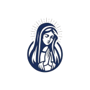
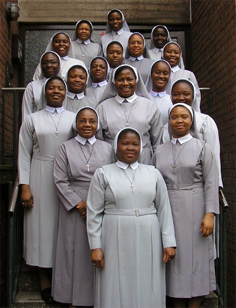
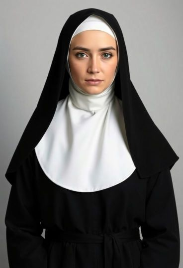
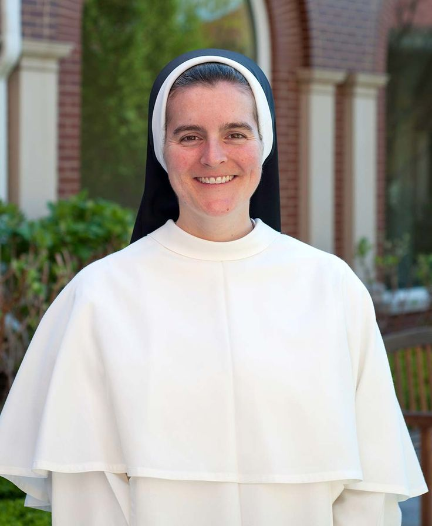
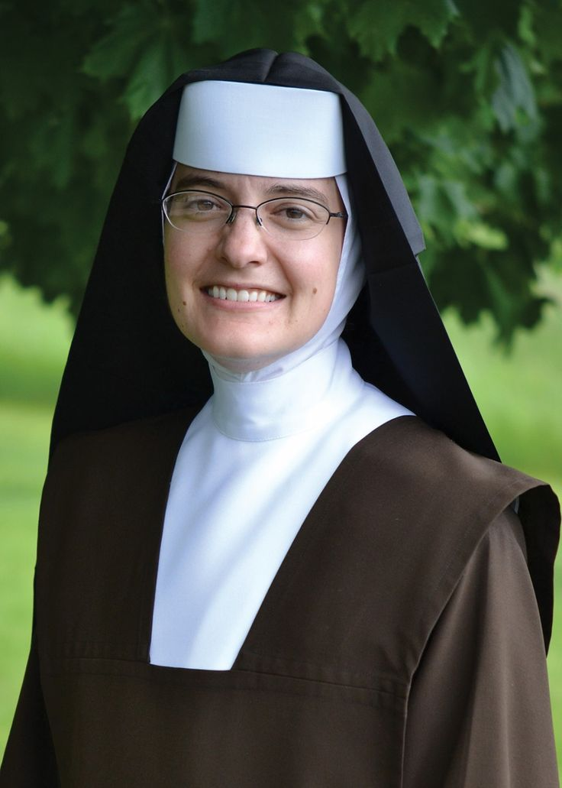
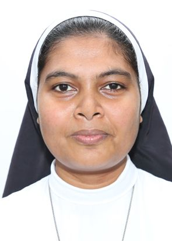
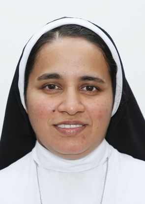
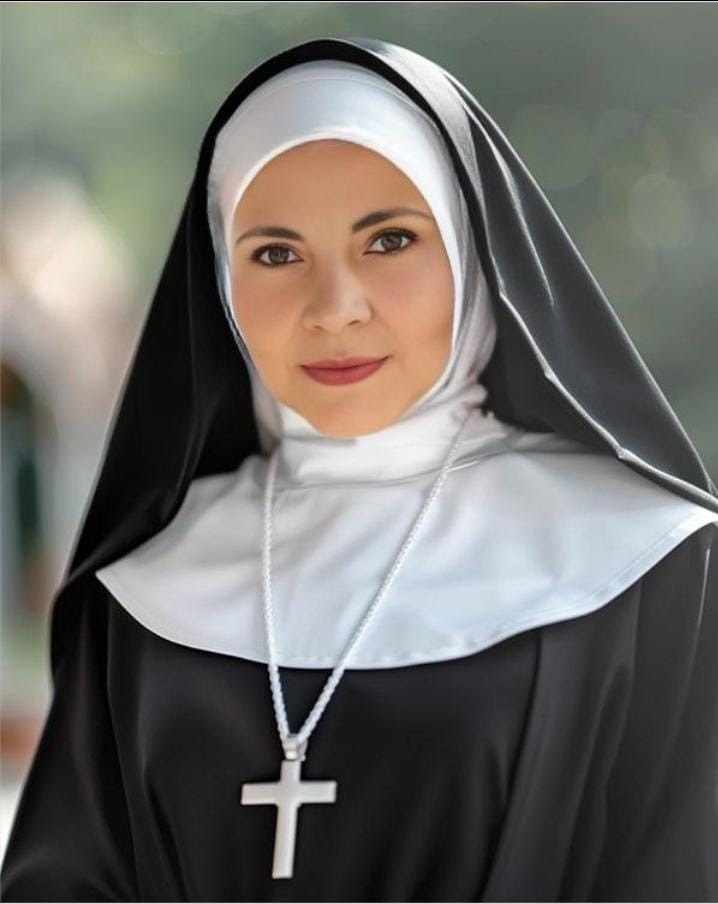

A sanctuary for faith, spiritual growth, and the integral development of the human person.
A Legacy of Faith and
Formation
THE VISION OF MARYCENTER HUMAN DEVELOPMENT AND RELIGIOUS FORMATION CENTRE, AMAWBIA Marycenter human Development and Religious Formation Centre was established and owned by the Religious Institute of the Sisters of the Mary, Mother of Christ, in the year 2014, under the administration of the Superior General Rev. Mother Mary Claude Oguh, IHM and her council. I was officially blessed and opened on Saturday, 13t December, with Holy Mass officiated by His Lordship Most Rev. Paulinus Ezeokafor, Bishop of Awka Diocese. Th purpose of the Centre is to actualize the desire o our beloved Father Founder, Archbishop Charles Heerey CSSp. for an organized religious education/formatio of the people for wholistic human development. Mate Christi Centre is thus, a multi-purpose Centre with different Departments that provide spiritual, pastoral psychological and social needs of the people in th society. The departments include; Youth/Vocation Animation Department: This department caters for religious and moral education / formation of young people through weekend, August Holiday programmes and retreats at the centre, in the schools and parishes. These programm aim at raising honest, responsible, God fearing loving Christians and patriotic citizens who will be leaders of tomorrow. Scholasticate Programme: This is a one year programme designed for deepening Theological knowledge and pastoral capacity of young professed religious. It equips the young religious for a better understanding and living of their religious consecration and effective missionary work within and outside the country. Counseling Department: This provides psychotherapy and counseling services that help in averting psychological and emotional challenges of people with drug/alcohol addictions, behaviora misconducts, and scars of abuses etc. many people have received healing, and are given hope through the humble and compassionate listening, counseling and rehabilitation at the centre.

OUR MISSION
Blending Tradition with Personal
Growth
Mary Center human development and religious formation Center was established and owned by the Sisters of the Immaculate Heart of Mary Mother of Christ. It was officially blessed and opened on Saturday, 13 December, 2014, with Holy Mass officiated by His Lordship, Most Rev. Paulinus Ezeokafor, the Bishop of Awka Diocese under the administration of the Superior General, Mother Mary Claude Oguh, I.H.M. and her Council. The purpose of the Center is to actualize one of the desires of our beloved Founder, Archbishop Charles Heerey, CSSp for an organized integral religious education and formation of Nigerian youth for their holistic human development and growth. Thus, Mater Christi Centre is a multi-purpose Center with different departments that provide physical, intellectual, psychological, spiritual and social needs of the people in the society.
Human development and religious formation are intertwined processes where faith and spiritual growth are shaped by and, in turn, influence
psychological, social, and biological development throughout a person's life. This is achieved through an integral approach that considers all facts
of a person, often guided by psychological theories and religious teachings that emphasize virtues like honesty and integrity...
Established for Spiritual Excellence
Vision & Values
Our actions are guided by three core pillars that define our community and our commitment to development.
Vision
To ensure a holistic formation of our people
in response to our Charism of Compassion in
the Spirit of Humility of Jesus and Mary, and
in the footsteps of our Founder, Archbishop
Charles Heerey, CSSp.
Mission
Sharing the Gospel values to provide a generic
and specialised animation and counselling
programmes in view of transforming individuals
and the society
Our Thrust Areas
Catechetical Programmes for Christian Doctrinal
Formation Psycho-spiritual counselling and
Rehabilitation Religious Vocation Promotion
Scholastic Programme for Young Religious
Children and Youth Weekend Holidays
Programmes.

Our Commitment
“Blending timeless Catholic tradition with modern human development methodologies to create a comprehensive pathway for growth”
At Mater Christi Centre, we are devoted to fostering integral human
development through compassionate service, transformative education,
and spiritual renewal. We remain grateful to God for the success stories
of those whose lives have been touched and transformed through our
programs.
Leadership & Faculty

Rev. Mother Maureen Akabogu
Superior General, Sisters of Immaculate
Heart of Mary Mother of Christ

Rev. Sr. Dr. Lucella Ukegbu IHM
Administrator
Sr. Mary Beth Anumba IHM
Academy of Art Music / Sacred Music

Rev Sr. Maria Echezonachukwu Dim IHM
Department of Youths

Sr. Mary Theophane Nwolisa IHM
Catechesis & Psycho Spiritual Formation

Sr. Mary Frances Ezeakunne IHM
Director Counseling Center

Sr. Maria Ifeomachukwu Asodike IHM
Scholasticate Directress
Begin Your Journey Today
Contact our Formation and Rehabilitation Team to discuss how we can
support your growth.